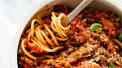

Spaghetti

Description
Meatless spaghetti.
Ingredients
- small onion, whatever veggies
- canned lentils
- tomato sauce
- packaged spaghetti
- herbs
- salt & pepper
Steps
- Chop up small onion and veggies.
- Cook until browned.
- Add canned lentils, herbs, salt & pepper.
- Add tomato sauce
- In another pot, add your pasta to boiling water. Follow the direction on package.
- Combine and enjoy.
back